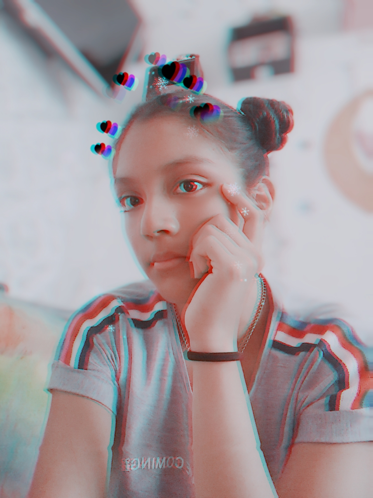

|  | Mi nombre es Blanca Fernandez Peña, tengo 17 años, vivo en Perú - Trujillo, una hermosa ciudad. Viví mi infancia en la ciudad de Piura, es muy calurosa y nos tan grande en comparación con Trujillo. Estudio en el colegio Hermanos Blanco y curso quinto de secundaria, este será mi último año en el colegio y pienso estudiar medicina. Así mismo soy una amante de los libros y me encanta coleccionarlos, mi genero favorito es el misterio y terror. Le agarré cariño a los libros desde que en la escuela empezaron a enviarnos a leer diversas novelas ahí fue cuando descubrí un maravilloso mundo que ha ido creciendo a través de los años y gracias al apoyo de mis padres, puedo seguir no solo leyendo si no apoyando a los autores comprando sus libros. Espero mi lista de libros te inspire a amarlo. |